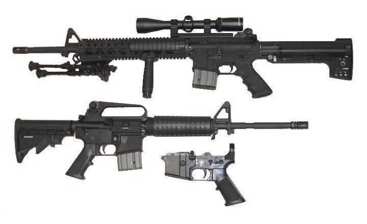

AR-15
AR-15 - Коротка інформація
- Тип: самозарядна гвинтівка
- Походження: США
- На озброєнні: 1958 — нині
- Розробник: Юджин Стоунер
- Розроблено: 1957
- Виробник:
- Вага: 2.27—3.9 кг
-
Довжина
ствола
:
- 610 мм
- 508
- 457 мм
- 406 мм
- 368 мм
- 292 мм
- 178 мм
- 165 мм
- Набій: .223 Remington , 5,56 НАТО
- Дія: Відведення порохових газів / поворотний затвор
- Темп вогню: 800 постр/хв (в автоматичних варіантах)
- Дульна швидкість: 975 м/с
- Ефективна: 400—600 м
- Система живлення: різні STANAG магазини (стандарт НАТО)
- Приціл: діоптерні цілик та мушка
В Україні

На початку 2010-х, виробництво AR-15 розпочало українське підприємство «Зброяр» .
Наприкінці 2010-х, гвинтівки типу AR-15 стали найпопулярнішими самозарядними карабінами в Україні, зокрема через їхній широкий асортимент і великий вибір набоїв від різних виробників.